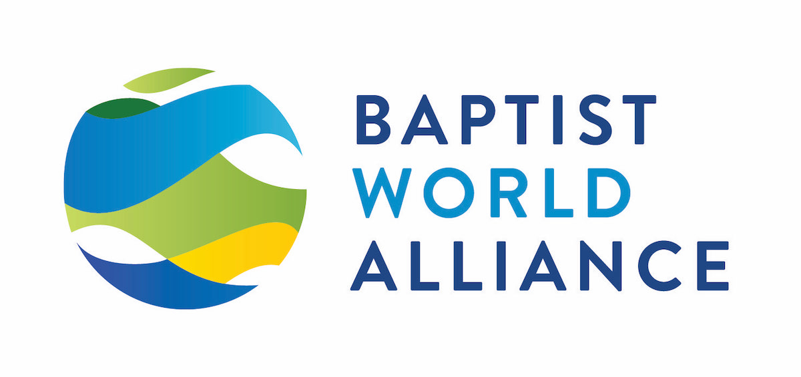
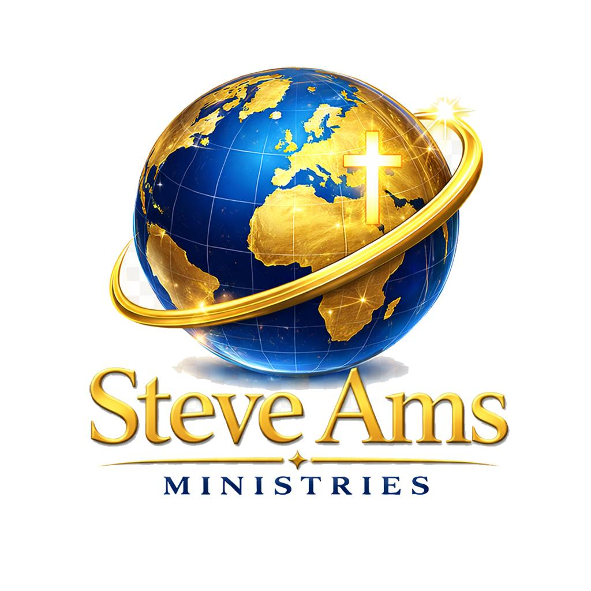
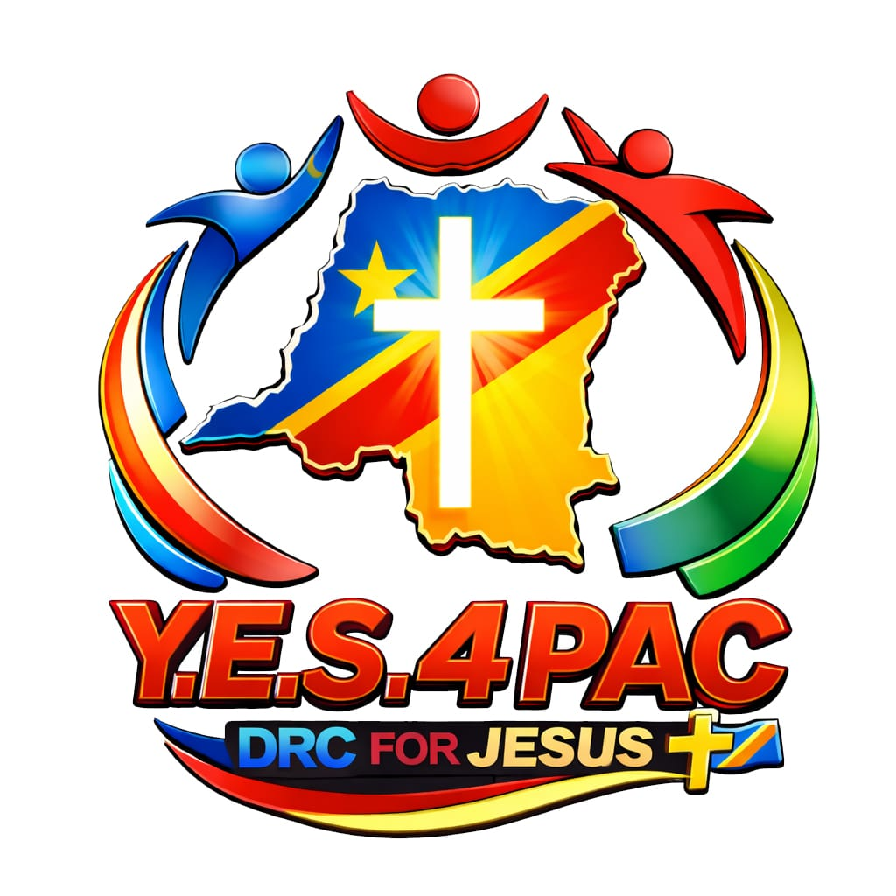
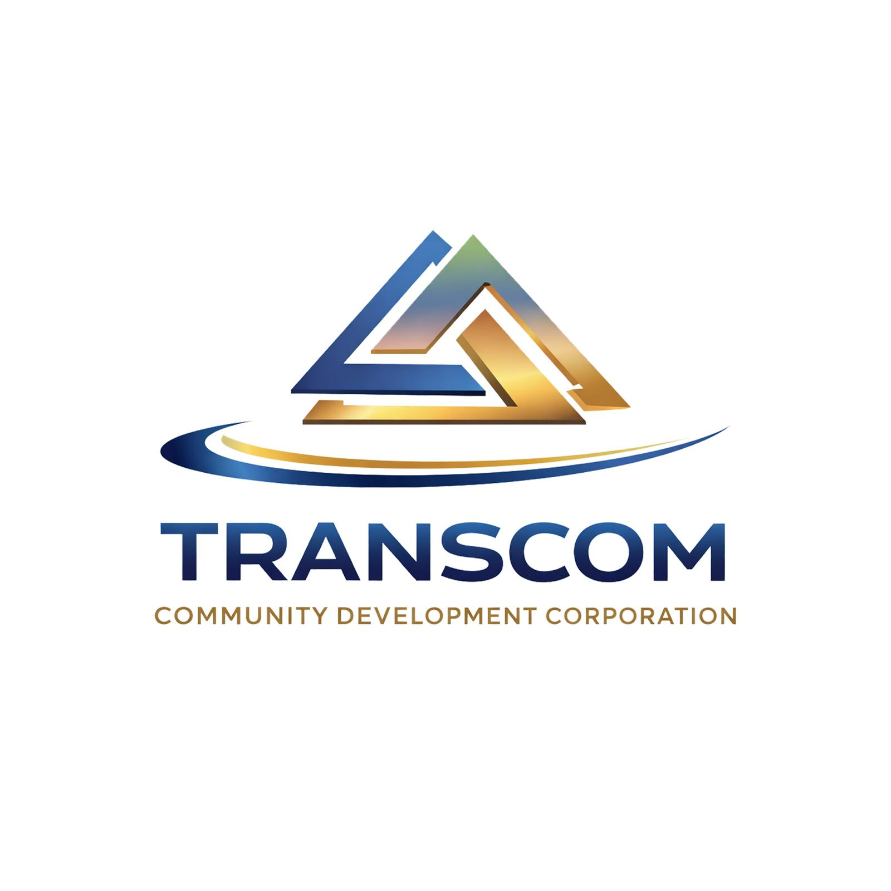
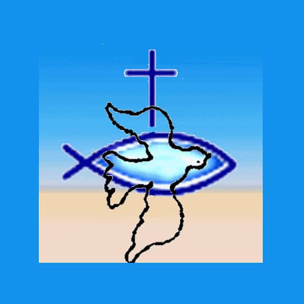

Communauté des Missions de Pentecôte
Adresse : n°38, Avenue de la conférence, Quartier Kyeshero, Commune de Goma, Ville de Goma, République Démocratique du Congo
CMPS · Arrêté ministériel n° 019/CAB/ME/MIN/J&GS/2026 du 09 février 2026
La CONVENTION DES EGLISES BAPTISTES ÉVANGÉLIQUES AU CONGO CEBEC, la CMPS est une communauté Pentecôtiste créée à Goma en Octobre 2014, par un groupe de pasteurs selon l’appel de Dieu fait au Pasteur Patrick MULENGEZI.
Nous sommes une jeune communauté mais cela ne nous arrête pas. Nous allons de l’avant, sachant que nous sommes pentecôtistes avec la ferme assurance du Seigneur :
Mais vous recevrez une puissance, le Saint-Esprit survenant sur vous, et vous serez mes témoins à Jérusalem, dans toute la Judée, dans la Samarie, et jusqu’aux extrémités de la terre
Actes 1 : 8
Dieu nous utilise pour l’avancement de son œuvre et Il nous utilisera de plus en plus. Nous croyons qu’Il a de grandes et merveilleuses choses en réserve pour nous. Ensemble, nous allons rejoindre des gens que personne d’autre ne peut rejoindre et nous allons marquer cette génération.
Notre vision : une communauté de Missions évangéliques, baptistes et pentecôtistes, unie en Jésus-Christ, pour faire connaître Jésus crucifié et ressuscité en RDC et jusqu’aux extrémités de la terre.
Lire notre visionProclamer l’évangile du salut conformément à l’ordonnance de Jésus Christ Notre Seigneur selon Matthieu 28 : 19-20 ; Marc 16 : 15-16 ; Jean 20 : 21 et la création des missions locales.
Promouvoir le développement social, économique et culturel des populations par l’élaboration et l’exécution des programmes et des projets de développement tel que la création des écoles, l’organisation des œuvres sociales (médias communautaires, hôpitaux, centres d’encadrement).
Organiser toute autre activité d’intérêt général compatible avec la mission de la communauté au service de la population.
La Communauté des Missions de Pentecôte Smyrne est structurée autour des organes de direction suivants :
Le conseil exécutif est l’organe d’administration et d’exécution. Il est constitué de :
Notre foi est tirée de la Bible, notre unique référence.
La Trinité divine (père, fils et saint esprit).
La bible est la parole infaillible de Dieu.
Le salut par la grace de Dieu.
Le Saint-Esprit.
Pour bien atteindre son but, la Communauté des Missions de Pentecôte Smyrne « CMPS » travaille avec des Églises Chrétiennes locales et internationales et des Associations chrétiennes ou des particuliers qui ont accepté le partenariat pour la bonne marche de l'œuvre de Dieu.





Chaque jour de la semaine nous vous invitons à nous rejoindre pour un moment de forte communion avec le Seigneur Jésus-Christ.
Prière d'intercession
17H00 - 18H00
Etude biblique
17H00 - 18:30
Culte de délivrance
17H00 - 19H00
Culte d'adoration
08:30 - 10:30
 Français
Français
 English
English
 Español
Español
 Swahili
Swahili